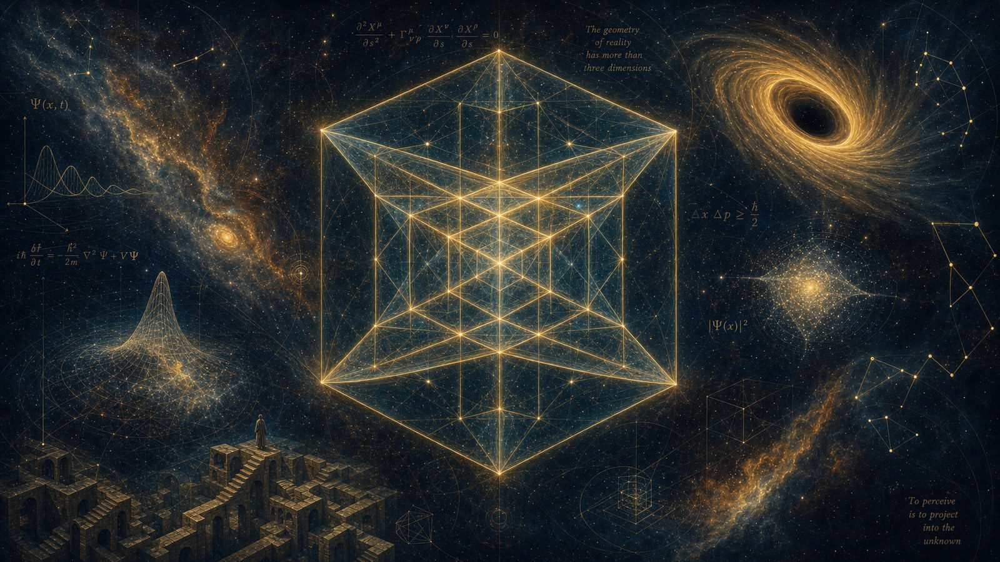

From Quantum Theory to 7-dim
The next paradigm shift in physics — just as Dijkgraaf explains how classical physics gave way to quantum mechanics, quantum mechanics is now giving way to something broader.
By Jacobus van Merksteijn · Malta · 11 July 2026

Prologue: how Dijkgraaf tells it
In the episode of NRC Onbehaarde Apen of 24 June 2026 Robbert Dijkgraaf tries to explain quantum mechanics. The title — "we understand even less of it now" — is not a joke but a diagnosis. Dijkgraaf, whom few equal in making physics accessible, must honestly admit at the end of an hour that the theory does calculate, but doesn't understand. It is accurate to 12 decimalen and simultaneously defies every attempt to say what it actually describes.
Dijkgraaf knows that pattern. In his lectures and interviews — at Ecosofie, in Quanta Magazine, in the Robbert-special of the Nederlands Tijdschrift voor Natuurkunde — he likes to sketch how physics develops in leaps. At the beginning of the twentieth century, anomalies accumulated in classical physics: blackbody radiation, the photoelectric effect, atomic stability. Newton and Maxwell could not handle them. Planck performed a "revolutionary calculation trick" in 1900 by assuming that radiation came in packets (nl.wikipedia.org — Paradigma)), and with that, the quantum revolution began. What first seemed like an emergency measure became a new paradigm.
Thomas Kuhn described this pattern in *The Structure of Scientific Revolutions*: paradigms hold their ground as long as their anomalies can be solved with minor interventions; if too much accumulates, the model creaks and a leap follows (Physics World about Kuhn). The transition from classical to quantum is the prime example of this.
The anomalies of 2026
Quantum mechanics is not in crisis because it is wrong. It is in crisis because it is too successful and simultaneously fundamentally incomplete. Four open wounds, exactly as I named them earlier in the [article about Dijkgraaf in 4D](artikel_dijkgraaf_4d.md):
- Quantization is still a postulate. Planck's constant is in the theory as an assumption, not as a consequence.
- Superposition and collapse have no mechanism. Copenhagen, many-worlds, decoherence — they are interpretations, not explanations.
- Entanglement remains "spooky". The correlations have been measured, the causality is missing.
- The observer has no place. Consciousness is in the middle of the formula without being in the formula.
And on top of that, cosmological anomalies are piling up in 2026 that make the succession of Kuhn's crisis unmistakable:
- Dark energy seems to evolve. The DESI results of 2025 and 2026 show that the cosmological constant Λ may not be a constant at all (Fermilab, Jan 2026; phys.org, Mar 2026). The Lambda-CDM model "shows cracks" (Frontier, Mar 2026).
- Dark matter is not found after 60 jaar. Not a single proposed particle — WIMPs, axions, sterile neutrinos — has been found.
- Erik Verlinde and others doubt gravity as a fundamental force. Verlinde literally states in Scientias: "I think we are on the eve of a scientific revolution."
- String theory needs 10 or 11 dimensions to close at all. AdS-CFT shows that a universe with gravity is mathematically equivalent to a boundary theory without gravity with one fewer dimension (Papilov 2026).
- Loop quantum gravity postulates that space itself has an atomic structure (Wikipedia — LQG).
The message from all these fronts is the same: **the current 4D model is creaking at all sides**. Each subfield has devised its own rescue — extra dimensions, holography, emergence, spin networks — and no single rescue is universal. That is exactly the Kuhnian foreshadowing of a paradigm shift.
The structure of the leap
Dijkgraaf often describes the transition from classical to quantum as an expansion, not a replacement. Classical physics is not wrong; it is the large-scale limit of something broader. Newton remains correct as long as you do not become too small.
The same step is now once again at the door, but on a different axis. Quantum theory is not wrong; it is the 4D-projection of something that lives in more dimensions. That is the core tenet of the 7-dim framework:
- Space (x, y, z) and time (t) remain as four classical axes.
- G — size, scale acceleration — adds discrete depth.
- W — value, from antimatter to matter, from coherence to dissolution — adds distribution.
- N — plurality, the index of universes via black holes — adds unity over distance.
The leap is not: letting go of quantum mechanics. The leap is: recognizing that quantum mechanics is the shadow of a 7-dimensional object. What Planck did when he postulated packets was, after all, also a shadow description. Now we place the source of the shadow beside it.
The four walls, demolished
Wall 1 — Quantization
Problem in 4D: why does energy come in discrete steps? Planck's constant is a given, not a consequence.
Solution in 7D: G is not continuous. The elementary step along the G-axis is Planck's constant:
mathith equiv Delta_mathitG
Quantization is then not a postulate but the projection of G-granularity onto 4D. What we call "a quantum" is one step along the fifth dimension.
E = h·ν becomes simple: energy is the number of G-steps per t-unit. And because the site states that mathitm_texteff propto mathitG and mathitc_texteff = mathitc_0/sqrt|mathitG| (7-dim.com), E = mc² follows automatically — the mass-energy equivalence is simply the sign of the G-axis.
Wall 2 — Superposition and collapse
Problem in 4D: a particle is in multiple states simultaneously until someone looks. No one knows what "looking" does.
Solution in 7D: a superposition is a state that is *smeared out along the W-axis*. Our 4D instruments project the W-distribution onto a single W-coordinate and see multiple possibilities stacked. A measurement is nothing more than a W-coupling between apparatus and object; the "collapse" is the geometric observation that a projection returns one value.
No mysticism, no special collapse rule: just what a shadow does.
Wall 3 — Entanglement
Problem in 4D: two particles touch each other faster than light can travel. Einstein called it "spooky".
Solution in 7D: two entangled particles are one object with the same N-coordinate. Spatial distance only lives in (x, y, z). Along N, there is no distance. Thus, nothing travels — there is one 7D entity that is visible in two places in the 3D projection.
This connects directly to the holographic principle: information in the interior of a region is fully encoded on the boundary. In 7D terms: N-unity makes "distance" into a projection artefact.
Wall 4 — The observer
Problem in 4D: consciousness is at the heart of the measurement but has no place in the formula.
Solution in 7D: consciousness lies on the W-axis. The site literally states that W places "consciousness and ethics on the same coordinate system as atoms and galaxies" (7-dim.com). An observer is a system with a W-coordinate; a measurement is a W-coupling. No extra rule, no philosophical embarrassment — the same geometry.
What others do — and why 7D is simpler
This paradigm shift is felt in different ways by established physics. Each of the major contemporary programs is a partial answer to exactly the same questions. Comparison pays off:
String theory and M-theory
String theory needs 10 or 11 dimensions (IAS — Dijkgraaf on Quantum Mathematics). Six of those are "curled up" in Calabi-Yau manifolds that are so small that we do not see them. The theory provides a landscape of 10⁵⁰⁰ possible universes and therefore becomes difficult to falsify.
7D reading: string theory correctly senses that extra dimensions are needed. It only overestimates the number and hides them in scales that are too small. The three extra axes are not curled-up Calabi-Yaus; they are G, W and N — physically observable in mass, superposition, and entanglement. Where string theory gives 10⁵⁰⁰ universes, N gives them a concrete structure: every black hole is a universe. This is falsifiable through black hole observations.
Loop quantum gravity (LQG)
LQG postulates that space itself has an atomic structure, built from spin networks at Planck scale (Wikipedia — LQG).
7D reading: LQG correctly senses that there is discreteness. But the discreteness is not in space (x, y, z); it is in G. What LQG calls "atoms of space" are G-steps that project onto spatial measurements. The theory describes the shadow of quantization on the x-axis while the quantization itself lives on the G-axis.
Holographic principle / AdS-CFT
Maldacena showed that a universe with gravity is equivalent to a quantum field theory on the boundary with one dimension less (Papilov 2026).
7D reading: a wonderful indication that dimensions are not what they seem. In 7D terms: information lives across N. What the boundary encodes is not a version with one dimension less; it is the same 7D entity from a different projection. AdS-CFT is a special case of the broader 7D symmetry.
Verlinde's entropic gravity
Erik Verlinde states that gravity is not a fundamental force but an emergent phenomenon from information in spacetime — and that dark matter becomes redundant as a result (Scientias 2016).
7D reading: Verlinde is fundamentally right that dark matter is not an exotic particle. In 7D it is ordinary matter at a different W-value — invisible to our detectors but gravitationally active. Where Verlinde seeks information in spacetime, 7D places the information along W. Both are solutions without new particles.
Dark dimension scenario
Quanta Magazine reported in June 2026 on a "dark dimension" that would link dark matter and dark energy (Quanta, Jun 2026).
7D reading: the suspected "dark dimension" is exactly W. Dark matter and dark energy are not coincidentally explained by it together; they are two projections of the same W-distribution — matter at a different W-value (invisible) and the measurement artifact of variable G (apparent accelerated expansion).
DESI and the evolving dark energy
DESI 2025-2026 shows that dark energy changes over time (Fermilab; phys.org).
7D reading: of course it changes. The site states mathitc_texteff = mathitc_0/sqrt|mathitG|. If G varies locally and cosmologically, c varies, the measured distance varies, and "accelerated expansion" appears as a measurement artifact. Exactly what David Wiltshire suggests when he says that dark energy is "a misinterpretation" of non-uniform expansion (Scientias 2024).
Overview
| Phenomenon | 4D quantum theory (2026) | String / LQG / AdS-CFT / Verlinde | 7D framework |
|---|---|---|---|
| Quantization | Postulate (Planck's h) | LQG: discrete space atoms | Elementary G-step: h ≡ ΔG |
| Superposition | Amplitudes, no mechanism | Decoherence (partial) | Distribution along W-axis |
| Collapse | Undescribed | Many-worlds (10500 branches) | W-projection onto observer-W |
| Entanglement | Non-local, spooky | AdS-CFT: boundary encoding | One object with shared N |
| Observer | Philosophical problem | Unresolved | W-coupling |
| Dark matter | Undiscoverable particle | Verlinde: emergent | Matter at another W |
| Dark energy | Λ-constant that isn't constant | Wiltshire: measurement artefact | Consequence of variable G and ceff |
| Extra dimensions | None | String theory: 6 rolled up | G, W, N — physically observable |
| Black holes | Singularity, information paradox | AdS-CFT: boundary encoding | G < 0, each black hole = new universe (N) |
| Gravity | Fundamental force | Verlinde: emergent from information | Emergent from G-gradient |
| Multiple universes | Speculative | String theory landscape (10500) | Structural via N |
| Consciousness | Out of scope | Out of scope | On W-axis, equal to matter |
What stands out: almost every modern theory is a partially correct intuition, formulated within 4D. String theory feels the extra dimensions. LQG feels the quantization. AdS-CFT feels the dimension reduction. Verlinde feels the emergence. Wiltshire feels the measurement artefact of dark energy. Each of them is right about one piece. The 7D framework places their pieces side by side and sees: they are the same three extra axes, hit time and again from a different angle.
The methodological gain
Kuhn stated that paradigms are incommensurable and that we do not speak of progress but of replacement (nl.wikipedia.org — Paradigma)). But he allowed one exception: if the new paradigm adds explanatory power — if it solves all old problems and a few new ones besides — then one may speak of progress.
Test 7D against that standard:
- All existing quantum riddles-mysteries receive a geometric instead of a philosophical explanation.
- String theory's extra dimensions become physically observable instead of curled up.
- Dark matter and dark energy are explained without new particles.
- Consciousness receives a coordinate.
- The computational power of quantum mechanics is preserved because 4D is the projection; all successful predictions remain true.
- And the model is falsifiable: if G, W and N have no measurable effects on fusion, superposition or black hole signals, it is incorrect.
That is exactly what Kuhn "progress" called — and what Dijkgraaf describes as the logic of paradigm shifts: the new framework covers the old and more.
Where Dijkgraaf arrives, without saying so
Dijkgraaf says in Quanta Magazine that space and time may not be the most fundamental things in the universe (Quanta, Feb 2020). In Ecosofie, he repeats that science is "never finished" and that theory sometimes runs ahead of experiment (Ecosofie 155). In the podcast with NRC, he confesses that quantum mechanics remains incomprehensible.
These are not isolated statements. That is a physicist who, from the inside of the dominant theory, points to the contours of its successor. He does not say which one it is — he cannot say it as long as he remains within his own 4D language. But the shape he points to — a framework in which space and time are emergent, in which dimensions are more than what we see, in which the collapse is not a physical process but a projection — is exactly the shape of 7D.
The podcast describes, without intending to, exactly the paradigm that is about to break through. And the title — "we understand even less of it now" — is not the end of the story. It is the moment just before the beginning of a new one.
Epilogue
Just as Newton was expanded by Einstein and Bohr, so Bohr is now expanded by three dimensions he could not see into. Quantization, superposition, entanglement and measurement are not four fundamental riddles; they are four symptoms of the same geometric poverty — a 7D reality forced into a 4D coat.
That is the promise of 7-dim.com, and that is — if you listen closely to Dijkgraaf — the direction in which he has long been pointing without naming it.
Sources
- NRC Onbehaarde Apen, Robbert Dijkgraaf explains quantum, 24 June 2026
- 7-dim.com — The 7-Dimensional Framework
- Robbert Dijkgraaf, Quanta Magazine — Exploring Quantum Reality, 2020
- Robbert Dijkgraaf, The Unreasonable Effectiveness of Quantum Physics, IAS
- Ecosofie 155 — Science is never finished, with Robbert Dijkgraaf
- Thomas Kuhn, via Physics World and Wikipedia)
- Loop Quantum Gravity, Wikipedia
- AdS-CFT / Holographic principle, Papilov 2026
- Erik Verlinde, Scientias 2016
- DESI results, Fermilab Jan 2026; phys.org March 2026
- Dark Dimension, Quanta Magazine June 2026
- David Wiltshire on dark energy, Scientias 2024

Jacobus van Merksteijn
Malta
Publisher of Het Open Vizier. Systems thinker on climate, energy and democracy.